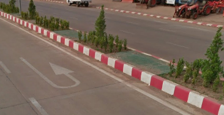

V Laosu je tato vlajka velmi často vidět

Okolí v městě je buď velmi ploché nebo je v okolí hodně kopců nebo hor.
Celým Laosem protéká řeka Mekong.
V Laosu můžete vidět toto auto:

V Laosu můžete vidět tyto červeno-bílé obrubníky:
V Laosu můžete vidět sloupy, které jsou podobné těm v Thajsku a vypadají takto:

Laos používá žluté SPZ, takže je jednoduší jej rozpoznat od sousedících zemí.

Laos používá Laoštinu, která je jiná než Thajština a vypadá takto: